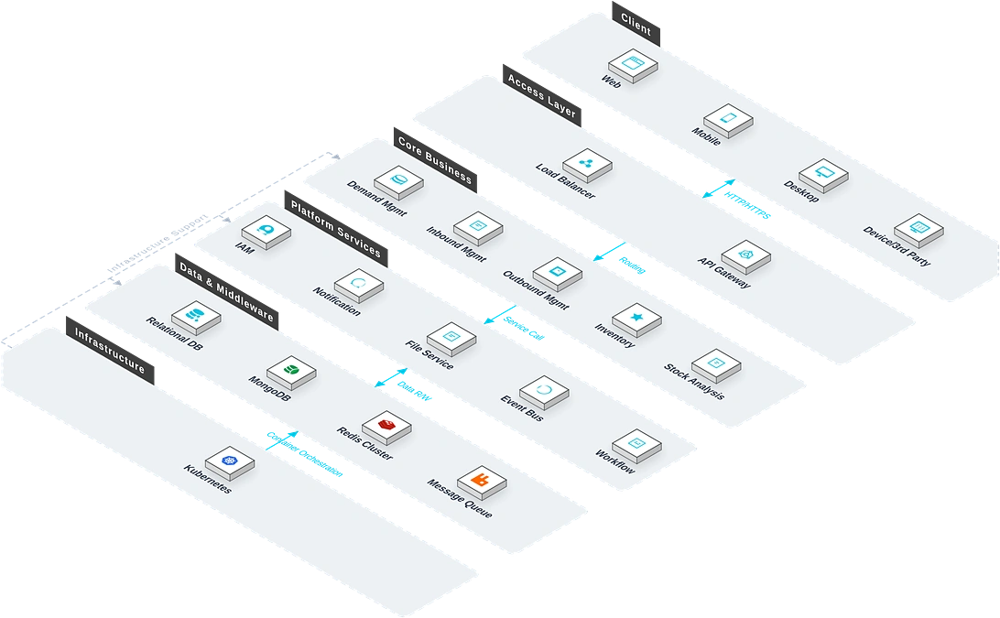

The Materials Management System is an end-to-end digital warehouse platform for engineering projects. Addressing the pain points of inaccurate inventory, overstock, or stockouts caused by complex material categories and frequent turnover, the system covers requisition, inbound inspection, outbound, labour-protective gear and tool control, stock-taking, and scrap disposal. It delivers multi-warehouse coordination and material traceability, helping enterprises precisely control inventory, reduce warehouse costs, and ensure timely supply of construction materials.

Key Features
The system covers requisition, inspection, inbound, outbound, stock-taking, scrap, labour gear and tools, and earthwork — full-process core modules.
Requisition
Real-time inventory and alert viewing, with material- and team-based requisition initiation.
Review
Multi-level review and e-signature for material requisitions, inbound and outbound orders.
Inbound Inspection
Quantity and quality inspection for purchased, transferred, and centrally-procured goods, supporting batch inspection.
Inbound
Inbound registration, location assignment, and transaction query for accepted materials.
Outbound
Material picking, location assignment, and outbound transaction recording per requisition.
Stock-Taking
Periodic or ad-hoc stock-taking with barcode scanning, batch operations, and surplus/shortage adjustment.
Scrap Materials
Registration, stock-taking, and transaction management for scrapped materials.
Team Consumption
Team-level statistics of material requisitions and consumption.
Labour Gear & Tools
Define replacement cycles and old-for-new rules for labour-protective gear and tools.
Earthwork
Manage earthwork faces and vehicle records, tracking transport trajectories.
System Architecture
System Architecture

The system adopts a warehouse full-process plus operation-engine architecture: five on-site terminal types — PDA scanners, RFID readers, vehicle terminals, electronic scales, and printers. An independent warehouse operation-engine layer covers inbound, outbound, internal, and wave-picking engines. The barcode/RFID service captures operation data in real time; the inventory service uses Redis Cluster for high-concurrency deduction; the transfer service relies on DotNetCore.CAP for distributed transaction consistency.
Application Scenarios
Suitable for multi-warehouse inventory coordination, material inspection and inbound tracking, team-based requisition and consumption analysis, stock-taking and scrap management.

Multi-Warehouse Inventory Control
Headquarters, regional, and project warehouses are managed centrally, with real-time inventory synchronisation, cross-warehouse transfer, and inventory alerts.

Inspection & Inbound Tracking
Quantity and quality inspection for purchased, transferred, and centrally-procured goods, with batch inspection and full inbound traceability.

Team Requisition & Consumption
Site supervisors initiate team-based requisitions, and the system automatically tracks team-level material requisition and consumption, providing data for cost accounting.

Stock-Taking & Scrap Management
Barcode scanning, batch operations, and surplus/shortage adjustment for stock-taking; standardised registration and flow management for scrap materials.
Advantages & Guarantee
Barcode/RFID Automatic Recognition
Supports barcode and RFID automatic recognition, improving on-site operation efficiency and data collection accuracy, and reducing manual entry errors.
Deep Integration of Multiple Systems
Deeply integrated with ERP, procurement, and engineering budget management systems, realizing business data interoperability and linkage between inventory, procurement and budget.
Offline Operation Guarantee
Adapts to the local network environment in Africa, supports offline operation and data synchronization, ensuring that business does not stop when the network is interrupted.
Multi-warehouse Linked Management
Unified management of group, regional, and project-level warehouses, real-time synchronization of inventory data, and efficient and transparent material allocation.
Full Lifecycle Traceability
Covers the entire process of requirement submission, acceptance and warehousing, outbound and collection, control of labor protection supplies and tools collection, inventory checking, and waste disposal.
Inventory Warning
Supports setting automatic warnings based on safety stock, shelf life, and sluggish materials, allowing early detection of material shortage and overstock risks.
Requirement Research
Gain in-depth understanding of the enterprise's warehousing business processes and multi-warehouse architecture, and sort out warehousing, outbound, inventory, allocation rules and integration requirements.
System Deployment
Supports on-premises deployment and cloud deployment, adapting to the local network environment in Africa and offline operation scenarios.
Training and Launch
Provides tiered training for administrators and end users, covering barcode/RFID operations, warehousing and outbound, inventory and allocation, and report usage.
Continuous Operation and Maintenance
7×24-hour remote technical support, regular system inspections and functional iterations, and continuous optimization of offline synchronization strategies.
Data Security
Inventory data is encrypted during storage and transmission, with hierarchical permission control and full recording of operation logs, supporting compliance audits.
Upgrade and Expansion
Supports flexible access of new warehouses, new material categories, and new integrated systems, expanding the coverage of materials management according to enterprise needs.